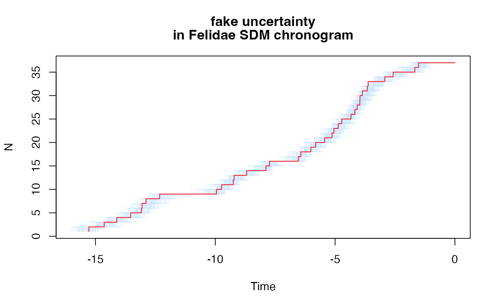

Generate uncertainty in branch lengths using a lognormal.
Source:R/uncertainty.R
phylo_generate_uncertainty.RdGenerate uncertainty in branch lengths using a lognormal.
Usage
phylo_generate_uncertainty(
phy,
size = 100,
uncertainty_method = "other",
age_distribution = "uniform",
age_sd = NULL,
age_var = 0.1,
age_scale = 0,
alpha = 0.025,
rescale = TRUE
)Arguments
- phy
A
phyloobject.- size
A numeric vector indicating the number of samples to be generated.
- uncertainty_method
A character vector specifying the method to generate uncertainty. mrbayes is default.
- age_distribution
A character string specifying the type of calibration. Only "fixed" and "uniform" are implemented for now.
- fixed
The age given in ncalibration will be used as fixed age.
- lognormal
The age given in ncalibration will be used as mean age. The standard deviation can be provided. # still need to add this option. By default, a 95 CI sd is used.
- uniform
The age given in ncalibration will be used as mean age. Where min_age = 0.9 * mean age, and max_age = 1.1 * mean age.
- age_sd
The standard deviation around the age to use for generating the uncertainty. If not a numeric value, var will be used to calculate it.
- age_var
The variance to calculate age_sd and generate uncertainty.
- age_scale
How to scale sd by the depth of the node. If 0, same sd for all. If not, older nodes have more uncertainty
- alpha
The significance level on uncertainty to generate. By default 0.025
- rescale
Boolean. If true, observed age will be rescaled each round.
Details
If you want to change the size of sampled trees you do not need to run mrbayes again. Just use sample_trees("mrbayes_trees_file_directory", size = new_size) and you will get a multiPhylo object with a new tree sample.
Examples
# Generate uncertainty over feline species SDM chronogram.
# Load the data:
data(felid_sdm)
# By default, generates a sample of 100 trees with var = 0.1:
unc <- phylo_generate_uncertainty(felid_sdm$phy)
#> Uncertainty sample number 1
#> Uncertainty sample number 2
#> Uncertainty sample number 3
#> Uncertainty sample number 4
#> Uncertainty sample number 5
#> Uncertainty sample number 6
#> Uncertainty sample number 7
#> Uncertainty sample number 8
#> Uncertainty sample number 9
#> Uncertainty sample number 10
#> Uncertainty sample number 11
#> Uncertainty sample number 12
#> Uncertainty sample number 13
#> Uncertainty sample number 14
#> Uncertainty sample number 15
#> Uncertainty sample number 16
#> Uncertainty sample number 17
#> Uncertainty sample number 18
#> Uncertainty sample number 19
#> Uncertainty sample number 20
#> Uncertainty sample number 21
#> Uncertainty sample number 22
#> Uncertainty sample number 23
#> Uncertainty sample number 24
#> Uncertainty sample number 25
#> Uncertainty sample number 26
#> Uncertainty sample number 27
#> Uncertainty sample number 28
#> Uncertainty sample number 29
#> Uncertainty sample number 30
#> Uncertainty sample number 31
#> Uncertainty sample number 32
#> Uncertainty sample number 33
#> Uncertainty sample number 34
#> Uncertainty sample number 35
#> Uncertainty sample number 36
#> Uncertainty sample number 37
#> Uncertainty sample number 38
#> Uncertainty sample number 39
#> Uncertainty sample number 40
#> Uncertainty sample number 41
#> Uncertainty sample number 42
#> Uncertainty sample number 43
#> Uncertainty sample number 44
#> Uncertainty sample number 45
#> Uncertainty sample number 46
#> Uncertainty sample number 47
#> Uncertainty sample number 48
#> Uncertainty sample number 49
#> Uncertainty sample number 50
#> Uncertainty sample number 51
#> Uncertainty sample number 52
#> Uncertainty sample number 53
#> Uncertainty sample number 54
#> Uncertainty sample number 55
#> Uncertainty sample number 56
#> Uncertainty sample number 57
#> Uncertainty sample number 58
#> Uncertainty sample number 59
#> Uncertainty sample number 60
#> Uncertainty sample number 61
#> Uncertainty sample number 62
#> Uncertainty sample number 63
#> Uncertainty sample number 64
#> Uncertainty sample number 65
#> Uncertainty sample number 66
#> Uncertainty sample number 67
#> Uncertainty sample number 68
#> Uncertainty sample number 69
#> Uncertainty sample number 70
#> Uncertainty sample number 71
#> Uncertainty sample number 72
#> Uncertainty sample number 73
#> Uncertainty sample number 74
#> Uncertainty sample number 75
#> Uncertainty sample number 76
#> Uncertainty sample number 77
#> Uncertainty sample number 78
#> Uncertainty sample number 79
#> Uncertainty sample number 80
#> Uncertainty sample number 81
#> Uncertainty sample number 82
#> Uncertainty sample number 83
#> Uncertainty sample number 84
#> Uncertainty sample number 85
#> Uncertainty sample number 86
#> Uncertainty sample number 87
#> Uncertainty sample number 88
#> Uncertainty sample number 89
#> Uncertainty sample number 90
#> Uncertainty sample number 91
#> Uncertainty sample number 92
#> Uncertainty sample number 93
#> Uncertainty sample number 94
#> Uncertainty sample number 95
#> Uncertainty sample number 96
#> Uncertainty sample number 97
#> Uncertainty sample number 98
#> Uncertainty sample number 99
#> Uncertainty sample number 100
length(unc)
#> [1] 100
# Make an LTT plot:
max_age <- max(sapply(unc, ape::branching.times))
ape::ltt.plot(phy = unc[[1]], xlim = c(-max_age, 0), col = "#cce5ff50")
for (i in 2:100) {
ape::ltt.lines(phy = unc[[i]], col = "#cce5ff50")
}
ape::ltt.lines(felid_sdm$phy, col = "red")
title(c("fake uncertainty", "in Felidae SDM chronogram"))
